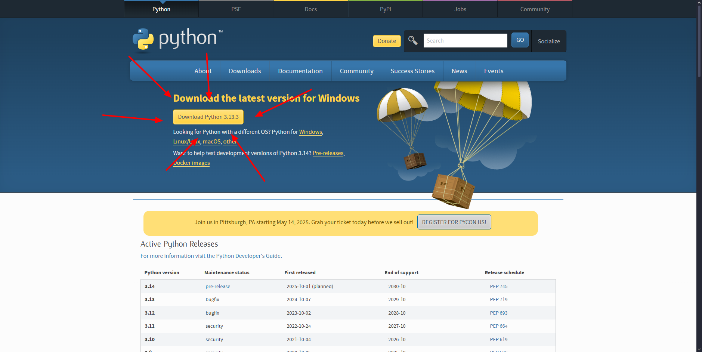

Instalacion y configuracion de python
Descargar el instalador
- Da clic en Downloads Python

- Selecciona la última vercion estable de Python para Windows (normalmente se recomienda la vercion mas reciente)
Ejecuta el instalador
- Una vez descargado el archivo ejecutable (.exe), haz doble clic en él para iniciar el proceso de instalación.
- Importante: Marca la casilla "Add Python to PATH" antes de hacer clic en "Install Now". Esto facilitará la ejecución de Python desde la línea de comandos.
completa la Instalacion
- El instalador se encargará de todo el proceso. Una vez finalizado, verás un mensaje de confirmación. Puedes cerrar el instalador después de eso.